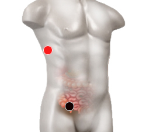

Derrame pleural
Pares
pleura - apéndice
mediastino - mediastino
pericardio - pericardio

Generalidades:
Acumulación de líquido en la pleura, que es la bolsa que rodea y protege a los pulmones.
Su cuerpo produce líquido pleural en pequeñas cantidades para lubricar las superficies de la pleura, el tejido delgado que recubre la cavidad torácica y rodea los pulmones. Un derrame pleural es una acumulación anormal y excesiva de este líquido. Hay dos tipos diferentes:
Los derrames pleurales trasudativos son causados regularmente por insuficiencia cardiaca congestiva. El líquido que se filtra hacia el espacio pleural, lo cual es provocado por presión elevada en los vasos sanguíneos o contenido bajo de proteínas en la sangre.
Los derrames exudativos son causados por vasos sanguíneos o vasos linfáticos bloqueados, inflamación, lesión al pulmón y tumores.